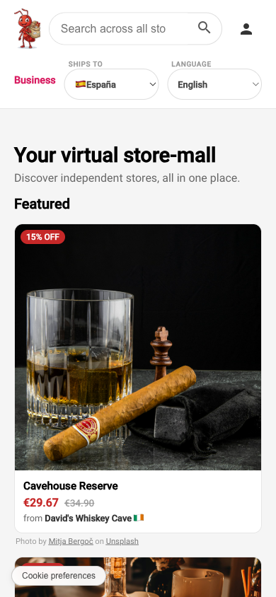

Portfolio piece — live demo, no clients yet
Store·Mall
A multi-tenant marketplace: one Angular app serving many independent storefronts, each walled off from the others at the database level. The stores you'll see are demonstration tenants, standing in for the real ones this is built to hold.


Isolating tenants
Every table that holds store data carries a store_id, and
Postgres row-level security enforces the boundary inside the database
itself — not in application code that could have a bug in it. The one
deliberate exception is the mall's own catalog: it reads across every store
without that filter, but only active products from stores that have opted
in to being listed. An order or a customer record never crosses that
line.
Eight languages, kept honest

Catalogue content and UI strings are translated by Claude, mostly the smaller Haiku model, into a column a store owner can review afterward rather than approve in advance. Each string is tagged Native, Curated, or Machine, so a shopper can tell what they're reading. Coverage isn't finished everywhere — mall-wide search is still English and Spanish only; the rest is a later phase.
A separate front door for sellers
Store owners sign in through their own auth system, entirely separate from the one shoppers use. From there they manage products and inventory, process orders, configure the store's theme and shipping, run promotions, and use the built-in AI tools for descriptions and content. The first time in, a five-step setup guide walks a new owner through catalog, branding, markets and money, shipping, and the legal pages before the store can go live. Getting an owner account at all still needs approval — there's no self-serve signup on that side yet.
What was hard
The tricky part wasn't translating text, it was deciding what stays canonical when two people write in different languages and one of them is being asked a compliance question. An admin — who only works in English — might ask a prospective store owner something like "do you hold a licence to ship alcohol within the EU?" The owner could be anywhere from Warsaw to Lisbon. Translate that carelessly and you've introduced ambiguity into a legal record.
So the admin always authors and reads in English, full stop. Everything sent to an owner is translated at the point it's dispatched, not at the point it's written — derived from the store's market, not a language the owner has to pick themselves. The owner answers in their own words, and that reply is kept exactly as typed; the English version shown to the admin is a courtesy rendering layered on top, never a replacement. Either side can always see the original.
That split — one canonical text, a translated rendering on top, decided once and enforced at a single boundary — is what lets a new market's language get added without touching the admin side at all. The two-language constraint on the admin team isn't a limitation the platform works around; it's the thing the design makes irrelevant.
Under the hood
Angular 22 — standalone, zoneless, signals — on an Express/Node backend. Supabase for Postgres, auth, and storage. Stripe for payments. Hosted on Vercel and Railway. Roughly 80,000 lines, in a private repository.
It's live at store-mall.com/mall — go look around. Nothing there is a real business yet; the tenants are demonstration stores standing in for the real ones this is built to hold.
Proyecto de portafolio — demo en vivo, sin clientes todavía
Store·Mall
Un mercado multiempresa: una sola app en Angular que da servicio a muchas tiendas independientes, aisladas entre sí a nivel de base de datos. Las tiendas que verás son inquilinas de demostración, en el lugar de las reales para las que está pensado.
Aislar a los inquilinos
Cada tabla que guarda datos de una tienda lleva un store_id,
y la seguridad a nivel de fila de Postgres impone el límite dentro de la
propia base de datos — no en código de aplicación que podría tener un
fallo. La única excepción deliberada es el catálogo del propio mercado:
lee de todas las tiendas sin ese filtro, pero solo productos activos de
tiendas que han decidido aparecer publicadas. Un pedido o un dato de
cliente nunca cruza esa línea.
Ocho idiomas, con honestidad
El contenido del catálogo y los textos de la interfaz los traduce Claude, sobre todo con el modelo más pequeño, Haiku, hacia una columna que el dueño de la tienda puede revisar después, no aprobar antes. Cada texto lleva una etiqueta — Nativo, Revisado o Automático — para que quien compra sepa qué está leyendo. La cobertura no está completa en todas partes: la búsqueda a nivel de mercado todavía es solo en inglés y español; el resto es una fase posterior.
Una puerta distinta para las tiendas
Los dueños de tienda inician sesión con su propio sistema de autenticación, completamente separado del que usa quien compra. Desde ahí gestionan productos e inventario, procesan pedidos, configuran el tema y el envío de la tienda, lanzan promociones y usan las herramientas de IA integradas para descripciones y contenido. La primera vez, una guía de cinco pasos acompaña al nuevo dueño por el catálogo, la marca, los mercados y el dinero, el envío y las páginas legales antes de que la tienda pueda publicarse. Conseguir una cuenta de dueño todavía necesita aprobación — de momento no hay alta autoservicio en ese lado.
Lo que costó de verdad
Lo difícil no fue traducir el texto, sino decidir qué queda como referencia cuando dos personas escriben en idiomas distintos y a una de ellas se le está haciendo una pregunta de cumplimiento normativo. Un administrador — que solo trabaja en inglés — puede preguntarle a un futuro dueño de tienda algo como "¿tienes licencia para enviar alcohol dentro de la UE?". Ese dueño puede estar en cualquier punto entre Varsovia y Lisboa. Traducir eso sin cuidado introduce ambigüedad en un registro legal.
Así que el administrador siempre escribe y lee en inglés, sin excepción. Todo lo que se envía a un dueño se traduce en el momento en que se despacha, no en el momento en que se escribe — derivado del mercado de la tienda, no de un idioma que el dueño tenga que elegir. El dueño responde con sus propias palabras, y esa respuesta se guarda tal cual se escribió; la versión en inglés que ve el administrador es una traducción de cortesía superpuesta, nunca un sustituto. Cualquiera de las dos partes puede ver siempre el original.
Esa separación — un texto de referencia, una traducción encima, decidida una vez y aplicada en un único punto — es lo que permite añadir el idioma de un mercado nuevo sin tocar el lado del administrador. La limitación de dos idiomas en el equipo de administración no es algo que la plataforma esquiva; es justo lo que ese diseño vuelve irrelevante.
Por dentro
Angular 22 — standalone, sin zonas, con signals — sobre un backend en Express/Node. Supabase para Postgres, autenticación y almacenamiento. Stripe para los pagos. Alojado en Vercel y Railway. Unas 80.000 líneas, en un repositorio privado.
Está en vivo en store-mall.com/mall — puedes echar un vistazo. Todavía no hay ningún negocio real ahí; las tiendas son de demostración, en el lugar de las reales para las que está pensado.